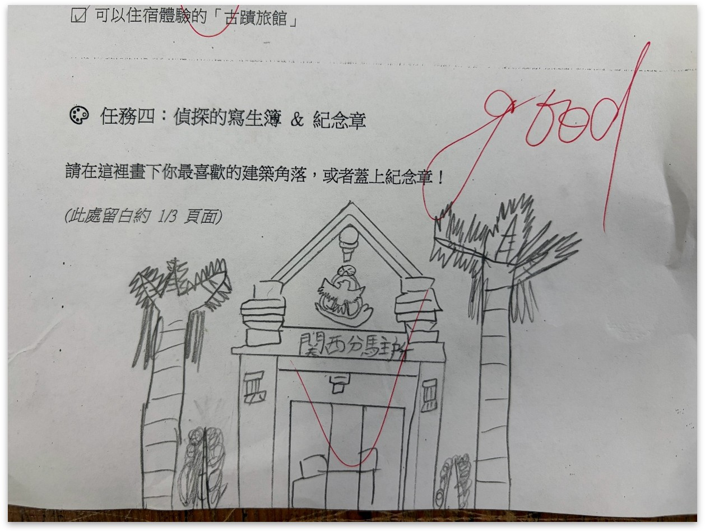
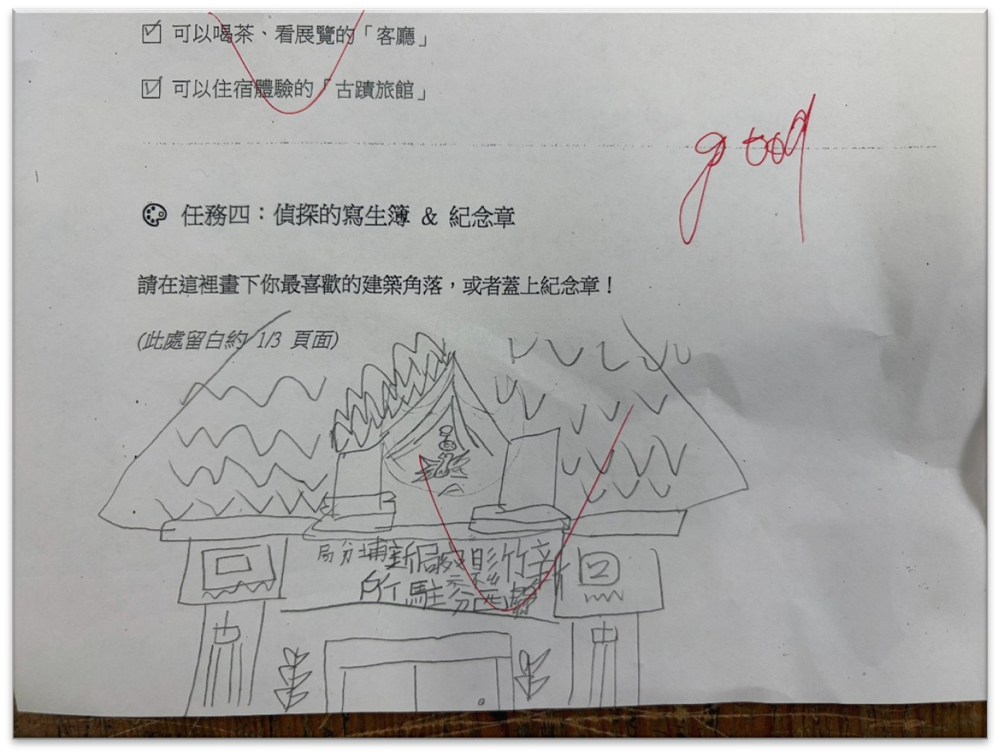

守護與守戶 | 關西分駐所前世今生
時光偵探事務所 —— 關西國小三年級校本建築傳說課程
結合數位科技、AI 繪本解碼、社區實地走讀與藝術創作，帶領孩子化身時光偵探，解開百年古蹟關西分駐所的建築構造密碼與時代演變，並思索文化資產的真正價值。
標的檔案 (Target Profile)
CENTURY-OLD HERITAGE DIGITAL IDENTITY
新竹縣定古蹟 關西分駐所
關西鎮唯一保留完整的日式官署與警察宿舍聚落
大正 9 年 (1920年)
歷經逾百年的歷史歲月變遷，陪伴關西鎮民數世代。
新竹縣定古蹟（衙署類）
具備極高之文化資產價值與歷史保存地位。
興亞樣式
融合西洋幾何柱飾、門廊與日式傳統黑瓦構造。
警察辦公及住宿聚落
新竹縣唯一完整保留分駐所與後方所長/員警宿舍群之建築聚落。
時光影像藝廊 (Photo Slide Showcase)
HISTORICAL VISUAL ARCHIVE SLIDESHOW


任務框架 (Mission Framework)
T.E.A.M. MODULE MATRIX
T (Tour) 遊關西
數位先導
透過多媒體與 AI 繪本引導，建立學童對分駐所歷史軌跡與建築樣式的認知基礎。
E (Explore) 探關西
實地搜查
走出教室走讀老街與分駐所周邊，記錄歷史紋理與生活軌跡，連結在地記憶。
A (Art) 藝關西
統整匯出
小組深度討論、老街散策觀察，重構視覺記憶與空間密碼之意象。
M (Make) 愛關西
成果展現
繪製偵探寫生簿、口頭發表並進行文化資產保存反思，成為真正的時代守護者。
建築密碼透視圖 (Architectural Blueprint)
PHASE 1 : DIGITAL GUIDANCE & ARCHITECTURAL CODES
【Phase 1】數位先導：AI 繪本與多媒體解碼
老師運用 AI 電子繪本與動態影片，解析日式老屋「會呼吸的屋瓦」與「客廳泡茶文化」。
點擊透視點解開建築密碼
請點擊上方圖表熱點以檢視密碼說明
點選「鬼瓦」、「破風」或「鶯聲地板」，探索分駐所結合西洋與日式防衛與權威象徵的建築技術。
官方的威嚴 (The Authority)
- 建築特徵：嚴肅的「破風」三角構造設計與正面西洋古典幾何柱飾。
- 空間功能：位於地理戰略核心，展現官方權威，維護地方治安與守護邊界。
家的溫潤 (The Home)
- 建築特徵：後半部傳統日式木造結構、榻榻米房間與長長的「緣側走廊」。
- 空間功能：提供駐守警員與家屬日常休憩安心放鬆的質樸歸屬感。
【Phase 2】實地搜查與時空對比
FIELD INVESTIGATION & TIME-SPACE COMPARISON
菜市場穿梭、太和宮走讀與專家引路
即使天公不作美，學童實地踏查的熱情不減！孩子們從關西菜市場一路穿梭走讀至太和宮。在地學者巫俊明老師神救援引經據典，穿透人文巷弄的古樸氣質，讓百年歷史在孩童眼前鮮活重現。
實地踏查路線
關西國小 ➔ 傳統菜市場 ➔ 太和宮 ➔ 關西老街 ➔ 關西分駐所
時空對比矩陣 (Time-Space Comparison Matrix)
- 1. 治安守護： 抓小偷、緝捕罪犯與維護地方安全治安。
- 2. 行政管理： 戶口調查（查戶口）、管理動態人口登記。
- 3. 公衛推動： 衛生檢查、管理環境整潔與傳染病防治宣導。
- 1. 文化傳承： 提供品茶與觀賞展覽的在地文化「客廳」。
- 2. 空間體驗： 開放給大眾住宿體驗與歷史教育導覽之「古蹟旅館」。
- 3. 地方創生： 轉化為推動客家文化、老街散策與觀光的新據點。
【Phase 3 & 4】偵探寫生簿：童眼中的建築密碼
STUDENT DETECTIVE SKETCHBOOK GALLERY
透過細緻的觀察與畫筆，關西國小學生將實地踏查與數位媒材吸收的知識進行重構。這不僅是學習單的完成，更是屬於孩童自己的關西分駐所記憶內化。

正門與破風結構觀察繪圖
著重描繪分駐所門廊三角破風與入口左右對稱之西洋式幾何柱飾。

所長宿舍與日式黑瓦細節繪製
描繪後方日式木造宿舍群、緣側木廊與屋頂鬼瓦等守護象徵細節。